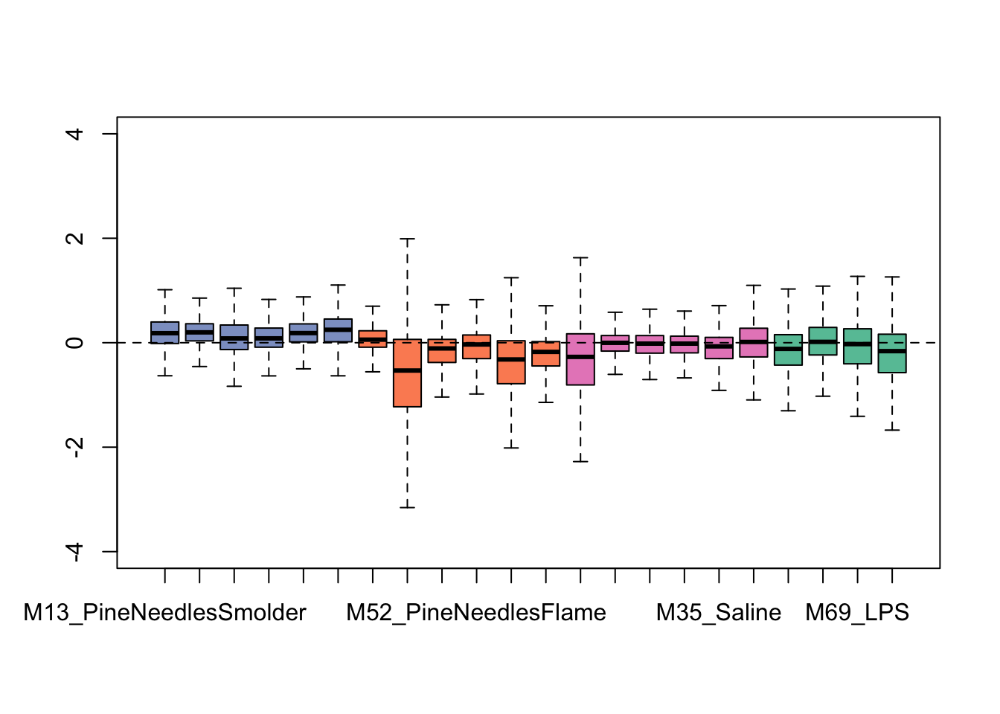
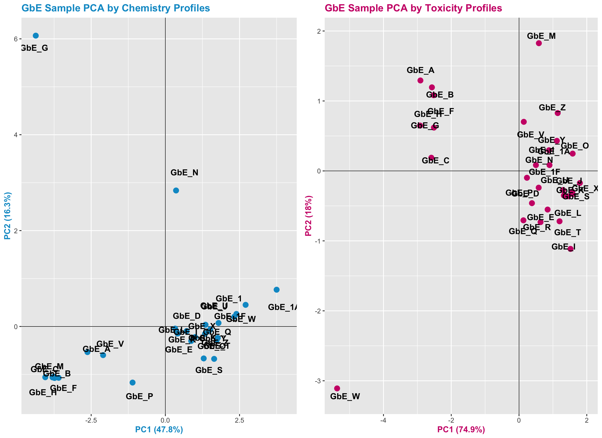

6.9 Principal Component Analysis (PCA)
Next, we will run through some example analyses applying the common data reduction technique of PCA.
We can calculate the principal components across ALL physicochemical data across all chemicals using the princomp function
my.pca <- princomp(dat.x, # input dataframe of physchem data
cor = T) # calculations will be based on the correlation matrix (as opposed to covariance) since we have all numeric values here (default PCA option)Here are the resulting scores for each chemical’s contribution towards each principal component (shown here as components 1-10)
## Comp.1 Comp.2 Comp.3 Comp.4 Comp.5 Comp.6
## 93762-09-5 -2.0425355 -1.4875982 -1.29779776 -0.04882877 0.25393797 -0.6799177
## 60270-55-5 -1.2291769 2.2936873 0.24345932 0.40280922 0.63000240 -1.0186985
## 70225-15-9 -1.0982561 1.3963638 0.03352018 0.90707254 0.05756006 0.1438501
## 335-24-0 -1.1374460 1.0712815 -0.14349891 1.09092722 0.21246867 -0.9427527
## 647-29-0 -0.4847481 0.1264224 1.16553341 -1.11771990 -0.29674860 0.1924128
## 68259-12-1 -0.3276157 0.2377300 1.32445577 -0.47677888 -1.17966092 0.0593078
## Comp.7 Comp.8 Comp.9 Comp.10
## 93762-09-5 0.14597268 1.25959099 0.231742917 -0.14124625
## 60270-55-5 0.11356003 -0.34454904 -0.385021331 -0.09883538
## 70225-15-9 -0.38489641 0.01723486 -0.006725509 0.02725202
## 335-24-0 0.22957369 0.11497271 -0.108096107 -0.17762819
## 647-29-0 0.18292023 -0.48181130 0.075229509 -0.22829905
## 68259-12-1 -0.01404007 0.03803686 0.043460416 0.18095023And the resulting loading factors of each property’s contribution towards each principal component
## Comp.1 Comp.2
## Molecular.Weight 0.09825313 0.108454961
## OPERA..Boiling.Point 0.46350428 0.029650863
## OPERA..Henry.s.Law.Constant -0.17856542 -0.502116638
## OPERA..Melting.Point 0.20645719 0.474473487
## OPERA..Negative.Log.of.Acid.Dissociation.Constant 0.32172963 -0.119465105
## OPERA..Octanol.Air.Partition.Coefficient 0.45329804 -0.008918089
## Comp.3 Comp.4
## Molecular.Weight 0.6797404 0.48432419
## OPERA..Boiling.Point -0.1993659 -0.03108544
## OPERA..Henry.s.Law.Constant -0.1798767 0.27695374
## OPERA..Melting.Point 0.2148579 0.09449999
## OPERA..Negative.Log.of.Acid.Dissociation.Constant -0.2862395 0.58268278
## OPERA..Octanol.Air.Partition.Coefficient -0.1321577 -0.04820475
## Comp.5 Comp.6
## Molecular.Weight 0.17351578 0.35736795
## OPERA..Boiling.Point 0.22224554 -0.01850753
## OPERA..Henry.s.Law.Constant 0.30566003 -0.47066669
## OPERA..Melting.Point -0.08063905 -0.68672356
## OPERA..Negative.Log.of.Acid.Dissociation.Constant -0.66998767 0.02924804
## OPERA..Octanol.Air.Partition.Coefficient 0.20778895 0.20575789
## Comp.7 Comp.8
## Molecular.Weight 0.11763362 0.32938640
## OPERA..Boiling.Point 0.12503355 0.09718690
## OPERA..Henry.s.Law.Constant 0.21138163 0.44526650
## OPERA..Melting.Point 0.34342931 -0.10233816
## OPERA..Negative.Log.of.Acid.Dissociation.Constant -0.09083446 0.03113686
## OPERA..Octanol.Air.Partition.Coefficient 0.44434707 -0.29734602
## Comp.9 Comp.10
## Molecular.Weight 0.03295675 0.02698233
## OPERA..Boiling.Point 0.03336277 0.81709497
## OPERA..Henry.s.Law.Constant 0.19706729 -0.10099077
## OPERA..Melting.Point -0.24532148 -0.10229774
## OPERA..Negative.Log.of.Acid.Dissociation.Constant 0.02576652 -0.03380215
## OPERA..Octanol.Air.Partition.Coefficient 0.49672303 -0.39565984##
## Loadings:
## Comp.1 Comp.2 Comp.3 Comp.4
## Molecular.Weight 0.108 0.680 0.484
## OPERA..Boiling.Point 0.464 -0.199
## OPERA..Henry.s.Law.Constant -0.179 -0.502 -0.180 0.277
## OPERA..Melting.Point 0.206 0.474 0.215
## OPERA..Negative.Log.of.Acid.Dissociation.Constant 0.322 -0.119 -0.286 0.583
## OPERA..Octanol.Air.Partition.Coefficient 0.453 -0.132
## OPERA..Octanol.Water.Distribution.Coefficient 0.330 -0.437 -0.151
## OPERA..Octanol.Water.Partition.Coefficient 0.162 -0.343 0.467 -0.485
## OPERA..Vapor.Pressure -0.352 -0.350 0.195 0.250
## OPERA..Water.Solubility -0.365 0.255 -0.254 -0.130
## Comp.5 Comp.6 Comp.7 Comp.8
## Molecular.Weight 0.174 0.357 0.118 0.329
## OPERA..Boiling.Point 0.222 0.125
## OPERA..Henry.s.Law.Constant 0.306 -0.471 0.211 0.445
## OPERA..Melting.Point -0.687 0.343 -0.102
## OPERA..Negative.Log.of.Acid.Dissociation.Constant -0.670
## OPERA..Octanol.Air.Partition.Coefficient 0.208 0.206 0.444 -0.297
## OPERA..Octanol.Water.Distribution.Coefficient 0.169 0.220
## OPERA..Octanol.Water.Partition.Coefficient -0.485 -0.162 0.178
## OPERA..Vapor.Pressure 0.350 -0.654
## OPERA..Water.Solubility -0.291 0.284 0.652 0.350
## Comp.9 Comp.10
## Molecular.Weight
## OPERA..Boiling.Point 0.817
## OPERA..Henry.s.Law.Constant 0.197 -0.101
## OPERA..Melting.Point -0.245 -0.102
## OPERA..Negative.Log.of.Acid.Dissociation.Constant
## OPERA..Octanol.Air.Partition.Coefficient 0.497 -0.396
## OPERA..Octanol.Water.Distribution.Coefficient -0.744 -0.199
## OPERA..Octanol.Water.Partition.Coefficient 0.306
## OPERA..Vapor.Pressure 0.313
## OPERA..Water.Solubility
##
## Comp.1 Comp.2 Comp.3 Comp.4 Comp.5 Comp.6 Comp.7 Comp.8 Comp.9
## SS loadings 1.0 1.0 1.0 1.0 1.0 1.0 1.0 1.0 1.0
## Proportion Var 0.1 0.1 0.1 0.1 0.1 0.1 0.1 0.1 0.1
## Cumulative Var 0.1 0.2 0.3 0.4 0.5 0.6 0.7 0.8 0.9
## Comp.10
## SS loadings 1.0
## Proportion Var 0.1
## Cumulative Var 1.06.9.1 With these results, we can answer Environmental Health Question #3:
6.9.1.1 (3) Upon reducing the data through PCA, which physicochemical property contributes the most towards informing data variance captured in the primary principal component (Comp.1)?
6.9.1.2 Answer: Boiling point contributes the most towards principal component #1.
6.9.1.3 Calculating % of Variance Captured by each Principal Component
We can view summary statistics describing how much of the variance from the original dataset was captured by each component, using the summary function.
## Importance of components:
## Comp.1 Comp.2 Comp.3 Comp.4 Comp.5
## Standard deviation 2.0230157 1.5440214 1.2415840 0.76635873 0.6905932
## Proportion of Variance 0.4092593 0.2384002 0.1541531 0.05873057 0.0476919
## Cumulative Proportion 0.4092593 0.6476595 0.8018125 0.86054312 0.9082350
## Comp.6 Comp.7 Comp.8 Comp.9 Comp.10
## Standard deviation 0.60491164 0.48939394 0.40589919 0.32548349 0.203793303
## Proportion of Variance 0.03659181 0.02395064 0.01647542 0.01059395 0.004153171
## Cumulative Proportion 0.94482682 0.96877746 0.98525288 0.99584683 1.000000000We can also calculate these values, and pull them into a dataframe for future use.
For example, to pull the percentage of variance explained by each principal component, we can run the following calculations, where first eigenvalues (eigs) are calculated and then used to calculate percent of variance, per principal component:
eigs <- my.pca$sdev^2
Comp.stats <- data.frame(eigs, eigs/sum(eigs), row.names=names(eigs))
colnames(Comp.stats) <- c("Eigen_Values", "Percent_of_Variance")
head(Comp.stats)## Eigen_Values Percent_of_Variance
## Comp.1 4.0925925 0.40925925
## Comp.2 2.3840022 0.23840022
## Comp.3 1.5415308 0.15415308
## Comp.4 0.5873057 0.05873057
## Comp.5 0.4769190 0.04769190
## Comp.6 0.3659181 0.03659181Here, we can see that Principal Component #1 (Comp.1) captures ~41% of the variance across all physicochemical property values, across all chemicals. Principal Component #2 captures ~24%, etc.
6.9.1.4 Visualizing PCA Results
Let’s now view the results of this PCA, focusing on the first two principal components, and coloring each chemical according to class (i.e. PFAS vs statins).
ggplot(as.data.frame(my.pca$scores), aes(x=Comp.1, y=Comp.2, color=as.factor(dat$List))) +
geom_point(size=4) + theme_bw() +
ggtitle('Version C: PCA Plot of the First 2 PCs, colored by Chemical Class') +
xlab("Principal Component 1") + ylab("Principal Component 2")
6.9.2 With this, we can answer Environmental Health Question #4:
6.9.2.1 (4) How do the data compare when physicochemical properties are reduced using PCA?
6.9.2.2 Answer: Data become more compressed, and variables reduce across principal components capturing the majority of variance. This results in improved data visualizations, where all dimensions of the physiochemical dataset are compressed and captured across the displayed components.
6.9.2.3 Incorporating K-Means into PCA for Predictive Modeling
We can also identify cluster-based trends within data that are reduced, after running PCA. This example analysis does so, expanding upon the previously generated PCA results.
6.9.2.4 Estimate k-means clusters from PCA results
Let’s first run script, similar to the previous k-means analysis and associated parameters, though instead here we will use data reduced values from the PCA analysis. Specifically, clusters across PCA “scores” values will be derived, where scores represent the relative amount each chemical contributed to each principal component.
The resulting PCA score values that were derived as the final cluster centers can be pulled using:
## Comp.1 Comp.2 Comp.3 Comp.4 Comp.5 Comp.6
## 1 2.621672 -0.3065303 -0.6241284 0.008849520 0.18554906 0.05058781
## 2 -1.191669 0.1393319 0.2836947 -0.004022509 -0.08434048 -0.02299446
## Comp.7 Comp.8 Comp.9 Comp.10
## 1 0.03429111 -0.05288759 -0.018394982 0.011945853
## 2 -0.01558687 0.02403981 0.008361355 -0.005429933Viewing the final cluster assignment, per chemical:
## [,1] [,2]
## 93762-09-5 "93762-09-5" "2"
## 60270-55-5 "60270-55-5" "2"
## 70225-15-9 "70225-15-9" "2"
## 335-24-0 "335-24-0" "2"
## 647-29-0 "647-29-0" "2"
## 68259-12-1 "68259-12-1" "2"6.9.2.5 Visualizing k-means clusters from PCA results
Let’s now view, again, the results of the main PCA, focusing on the first two principal components; though this time let’s color each chemical according to k-means cluster.
ggplot(as.data.frame(my.pca$scores), aes(x=Comp.1, y=Comp.2, color=as.factor(clusters_PCA$cluster))) +
geom_point(size=4) + theme_bw() +
ggtitle('Version D: PCA Plot of the First 2 PCs, colored by k-means Clustering') +
xlab("Principal Component 1") + ylab("Principal Component 2")
6.9.3 With this, we can answer Environmental Health Question #5:
6.9.3.1 (5) If we did not have information telling us which chemical belonged to which class, could we use PCA and k-means to accurately predict whether a chemical is a PFAS vs statin?
6.9.3.2 Answer: Yes!! Groupings derived from k-means, displayed in this PCA plot, line up almost exactly with the grouping of chemical classes (see Version C of this plot as the direct comparison).
6.9.4 We can also answer Environmental Health Question #6:
6.9.4.1 (6) What kinds of applications/endpoints can be better understood and/or predicted, because of these derived chemical groupings?
6.9.4.2 Answers:
- With these well-informed chemical groupings, we can now better understand the variables that attribute to the chemical classifications.
- We can also use this information to better understand data trends, and predict environmental fate and transport for these chemicals.
- The reduced variables derived through PCA, and/or k-means clustering patterns can also be used as input variables to predict toxicological outcomes.